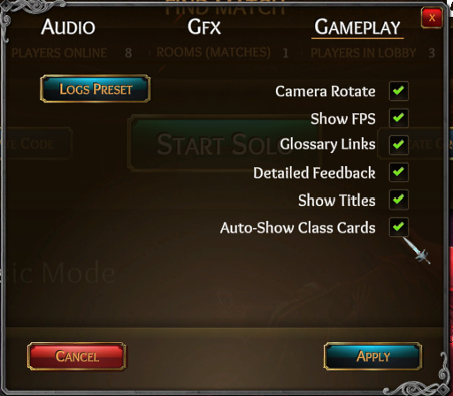
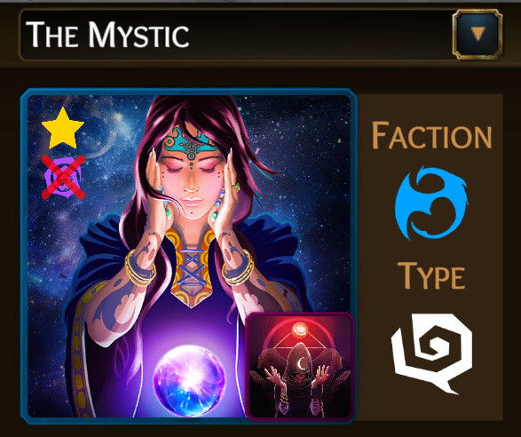

Balance, fixes, QoL, and localization prep

Localization
- Dynamic ability feedback has been localized: Chinese is not ready, but the coding to them is now ready for it (eg, instead of “you attacked blah”, it’ll now check the language and return the appropriate text). This was a huge change that affected English texts: Please report any inconsistencies.
Class Fixes/Balance
-
Debauchery and Strings of Mithras abils can no longer target the King in the 2nd target slot (meaning they can no longer target the King at all, anymore).
- The goal here was to remove safe Debauches, meaning players now have to make a conscious decision where they want their redirect target to end up on: rather than just King.
- Debauching to King allowed players to ignore conversion and, even if a King died, it was either:
- …a plus for BD (because EK),
- …or they just replaced the old GK with a new one (normally, killing GK by BD has its negatives: either the Execution Penalty, or Butler Suicide).
- The Fool now always shows as a positive match vs the Maid’s Matchmake abil (while not framed).
- The Fool’s auto “is [non-framed] match” and Scorned’s auto “isn’t match” is now added to Matchmake memo.
- Currently, if not framing, the Fool is always shown as incompatible to the Maid; rewarding the Fool simply for existing rather than actually using their ability designed to incriminate themselves. This, also, in turn, makes Maid an easier class to ‘prove’ themselves with than the other investigatives.
- By making Fool default to being always compatible, Fool will be encouraged to be more calculated with their frames, making the class require more depth to win with.
- Frenzy’s bypass was only working with 2-for-1: Fixed to also work for Assassinate. --Tryphon
- Court Wizard’s Clear Mind abil now works again vs Cult’s Brainwash abil.
- Cult Leader’s Blood of Mithras abil will no longer allow click when clicking your Rupture abil on Day 2+ then canceling target selection.
- Cult Leader’s Blood of Mithras abil can no longer target the Cult King.
- Some evil notifications such as
{some evil ally} will attack {x}was alerting the Cultseen King (such as Blood of Mithras and Expose): This should no longer happen. This may have only been happening to day ability alerts. - Spike Traps has been fixed after not actually working for a long time (where it seems like no one triggered the trap – ever).
- Fixed Reaper’s Icy Touch abil that was not showing you do not have enough souls instead of nothing, should something go wrong (such as a desync).
-
Mind Warp abils now have an added memo:
*Only affects Blue Dragon investigatives - When a Mystic uses a night ability, they now auto-switch immediately to the “Mystic” tab.
- Fixed starting Unseen King only partially flagged as starting. This affected the initial class cards you saw (leaving out Guard! abil) and may have affected other checks for starting Kings.
-
Mastermind was having some issues with Matchmaking + Neutrals. Fixed this for both pre and “post” In The Shadows:
- Fixed Reaper’s day abils that would allow multi-casting day abilities (should you have enough souls) among other strange effects when you use Gather Darkness:

- Handmaiden’s Analyze abil can no longer target the same person 2x.
- New, initiated Cult members will no longer show the Cult icon when a Cult King is present.
Stability/Optimization
- Fixed GameSparks (our data server) socket connection, which would randomly cause an
{ error: timeout }error shown in logs to roughly 1% of players which would cause either disconnection or inability to login.-
Reverted during beta: Found some issues to hint it’s not ready, yet. Close, but not yet.- The bug we encountered seemed separate! Re-reverted.
- If you’re super technical, this is actually an open source issue.
-
- Updated to a new version of Photon (our realtime server) which should fix the
timed out (P)login screen error that prevented some users from logging in. - Made class cards load async (prevents a small freeze when loading everything - loads a little at a time, instead) => There’s a chance you may temporarily see some individual texts/pictures loading, but with the reward of greatly improved performance.
Non-Breaking Feedback Fixes
- Princess’ Willowisp abil now shows feedback if the target didn’t attack anyone. This could have been a local bug, but fairly sure live!
- Clarified Noble’s Gossip abil feedback in class cards by extending the orange text of exceptions:
“…with restrictions: No conversion, attack, King, Debauchery, self-targeted, instant-evil-confirming or other Gossip abilities.”
-
You were healed {target} last nightstring that literally said target instead of the player’s name -
Surveillance abil’s “action word” feedback spelling (
surveille>> surveil). -
Expose abil typo saying that you will reveal who the
>Princeimprisons. - Fixed Facelift cancel flavor text typo, "remaining seen as the
(Class Name". - Fixed Icy Touch abil’s "You silenced
{target1PName}" typo. - Added a period to the end of Walking Bomb abil feedback, and worded it to sound less awkward.
- Possessor’s Facelift abil now includes a pronoun and shows the stylized color of that class name’s faction:
- Whenever you get feedback tips regarding “This could have been…”, it most should now consistently show in order from BD >> Unseen >> Cult >> Neutral >> Misc (eg, Suicide) and in alphabetical order from within each category.
Settings
- Revamped to be smaller, tabbed, and more-scalable (future changes == faster).
- New gameplay setting: “Auto-Show Class Cards”. Default ON.
- This will show your class cards ASAP when loaded into the game (above the loading screen, a few seconds before the game starts).
- As most new players forget about their class cards, this should help players learn their classes. For veterans, it’s nice to have an extra few seconds knowing your class - I bet most will keep it on.
- Since you’re probably wondering: I can’t make it show earlier than this since classes aren’t actually assigned until all players are verified to be in-game and connected.
Art/Sfx
- Sorcerer’s Detonate abil now triggers an arcane explosion sfx instead of the default death-slice sfx.
- Mastermind got a slight lighting bump/crop - probably only noticeable if you compare side-by-side.
- Ritualist got a slight lighting bump.
- Reaper got a slight lighting bump.
- Intrigue abil icon slightly changed to vary from Gossip.
-
Mystic portrait completely revamped:

More Stats
- Added a variety of individual legacy class stats (WIP) --Tryphon
- Note that only starting evil classes show here: Non-legacy stats will be improved later.
-
We’ll polish it up (eg, hover fx) laterNvm, added hovers.
General Improvements
- Class card description text areas are now scrollable (with a gradient fade-out) instead of long texts being crammed in with small font size.
- Class card “notifications” (feedback) sections are now mostly-sync’d with the code: Whatever feedback you see in-game should be sync’d with what you see in the class cards. That said, MANY missing feedback entries have been added and/or corrected.
- Mainly for offpeak timezones: If you are in queue for more than x period of time, the host can “start early” with 8+ players like private matches. Lobby chat will announce who can start. This is based on # of players online:
- If you are in queue for more than 10 mins when >= 50 players.
- If you are in queue for more than 7 mins when < 50 players.
- The cooldown may be adjusted next patch - we’ll see.
Misc
- “Main Chat” more-intuitively renamed to “Lobby Chat”.
- The left banner area now dynamically adds and removes different banners (instead of just swapping out 1), showing up to 4 at a time as events come and go. Demo:
- Also added a link to our Wikia’s lore section since it’s not yet found within the game (and would be a localization nightmare - maybe later lol).
- Added Unity Analytics to track basic metrics, like retention, to make better decisions. This also gives us the option to seek funding, which is generally insta-deny without retention stats
 Unity Analytics is “eh” – we may swap to something better in the future (we used GameAnalytics a while back for the charts, but they didn’t work out well when they broke our stats). I was playing around with Epic analytics, but it’s too new to be used here, so Unity it is Updated privacy policy to include this mention.
Unity Analytics is “eh” – we may swap to something better in the future (we used GameAnalytics a while back for the charts, but they didn’t work out well when they broke our stats). I was playing around with Epic analytics, but it’s too new to be used here, so Unity it is Updated privacy policy to include this mention. - Every ability script was improved for scalability and readability (making future bug fixes/balance changes significantly easier/faster): Although this was vigorously tested in alpha, we couldn’t test all combos – Please report any inconsistencies.
FAQ
WOW, this patch took stupidly long: What the heck were you doing?
Localization. Oh, so much localization… It wouldn’t have been bad if I started with it, but with all the dynamic text we have ({x} killed {y}. Could've been because of {z1, z2, z3}.). Even Chinese unicode periods/commas are different - and have a “built-in” space character. Let’s just say that these entire patch notes took less time than the single paragraph at the top mentioning localization.
It was… tedious. I’m not done, but at this point, I’m 99% done (just need store localizations and polish the reported bugs).
What else?
- Well, I also prettified every day/night ability that was not yet prettified – this makes future fixes/changes faster/scalable.
- I found a bunch of bugs while having to test ~150 abilities one at a time: It was sort of a good thing I had to do this or I wouldn’t have found these fixes! With all the bug fixes in the past few months and this patch… we’re looking super stable, lately.
- Well, the patch would’ve been boring if I didn’t spice it up with some minor balance!
- I was also spending resources looking into publishers/investors! Oh, yes. It’s official. We’re actively seeking partners.

{kind=link}
{kind=link}
{kind=link}